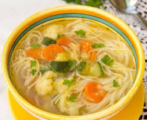
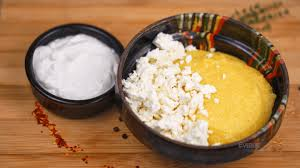
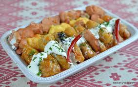
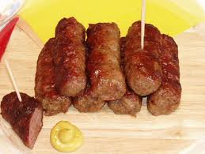
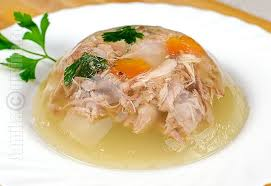
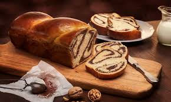
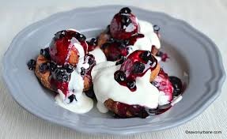
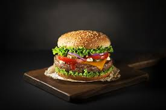
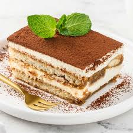

Rețete Populare
Acestea sunt rețetele pe care alți utilizatori le-au încercat și apreciat cel mai mult!
1. Supă de legume
O rețetă ușor de preparat, perfectă pentru o masă sănătoasă și rapidă.
- Ingrediente: morcovi, țelină, cartofi, ceapă, roșii, condimente.
- Instrucțiuni: Se fierb legumele până devin fragede și se adaugă condimentele la final.
2. Mămăligă cu brânză și smântână
- Ingrediente: mălai, apă, sare, brânză de burduf, smântână.
- Instrucțiuni: Fierbeți mălaiul cu apă și sare până se îngroașă. Serviți mămăliga caldă cu brânză de burduf și smântână.
3. Ratatouille

- Ingrediente: vinete, dovlecei, roșii, ardei, ceapă, usturoi, ulei de măsline, cimbru, sare, piper.
- Instrucțiuni: Tăiați legumele în felii subțiri. Așezați-le într-o tavă, alternând culorile. Stropiți cu ulei de măsline și condimentați cu sare, piper și cimbru. Coaceți la cuptor până sunt fragede.
4. Sarmale în foi de varză
- Ingrediente: carne tocată de porc, orez, ceapă, varză murată, bulion, sare, piper, mărar, cimbru.
- Instrucțiuni: Amestecați carnea tocată cu orez, ceapă și condimente. Împachetați în foi de varză și gătiți sarmalele în bulion până când sunt fragede.
5. Mititei
- Ingrediente: carne tocată de vită și porc, usturoi, bicarbonat de sodiu, cimbru, sare, piper, apă minerală.
- Instrucțiuni: Amestecați carnea tocată cu usturoi, bicarbonat de sodiu, cimbru, sare și piper. Adăugați apă minerală și formați mici rulouri. Gătiți la grătar sau în tigaie.
6. Piftie de porc
- Ingrediente: carne de porc cu os, usturoi, morcovi, ceapă, foi de dafin, boabe de piper, sare.
- Instrucțiuni: Fierbeți carnea de porc cu legumele și condimentele până când se desprinde de pe os. Adăugați usturoiul și strecurați lichidul. Turnați în forme și lăsați să se întărească la rece.
7. File de somon cu glazură de miere și muștar
- Ingrediente: file de somon, miere, muștar Dijon, usturoi, suc de lămâie, sare, piper.
- Instrucțiuni: Amestecați mierea, muștarul Dijon, usturoiul și sucul de lămâie. Ungeți fileurile de somon cu acest amestec și coaceți la cuptor până când peștele este bine făcut. Condimentați cu sare și piper după gust.
8. Cozonac
- Ingrediente: făină, zahăr, ouă, lapte, drojdie, unt, nucă, cacao, stafide, esență de rom.
- Instrucțiuni: Frământați un aluat din făină, zahăr, ouă, lapte, drojdie și unt. Umpleți cu un amestec de nucă, cacao, stafide și esență de rom. Coaceți până devine auriu.
9. Creveți în sos de vin alb
- Ingrediente: creveți, vin alb, usturoi, unt, suc de lămâie, pătrunjel, sare, piper.
- Instrucțiuni: Căliți usturoiul în unt, adăugați creveții și gătiți până se rozesc. Turnați vinul alb și sucul de lămâie, condimentați cu sare și piper. Gătiți până sosul se reduce și creveții sunt fragezi. Presărați pătrunjel proaspăt înainte de servire.
10. Papanași cu smântână și dulceață
- Ingrediente: brânză de vaci, făină, ouă, zahăr, praf de copt, smântână, dulceață de fructe de pădure.
- Instrucțiuni: Amestecați brânza de vaci cu făină, ouă, zahăr și praf de copt. Formați gogoși și prăjiți-le până devin aurii. Serviți cu smântână și dulceață de fructe de pădure.
11. Burgeri de vită cu cartofi prăjiți
- Ingrediente: carne de vită tocată, chifle, salată, roșii, ceapă, ketchup, muștar, cartofi, ulei de prăjit, sare.
- Instrucțiuni: Formați și gătiți burgerii de vită. Asamblați-i în chifle cu salată, roșii, ceapă, ketchup și muștar. Serviți cu cartofi prăjiți crocanți.
12. Tiramisu clasic
- Ingrediente: pișcoturi, cafea, mascarpone, ouă, zahăr, cacao.
- Instrucțiuni: Înmuiați pișcoturile în cafea și așezați-le într-un vas. Bateți gălbenușurile cu zahăr, adăugați mascarponele și încorporați albușurile bătute spumă. Alternați straturi de pișcoturi și cremă de mascarpone. Presărați cacao deasupra și lăsați la frigider câteva ore înainte de servire.


Urmărește-mă pe rețelele sociale